Miyako
Miyako · Iwate
Miyako
Highlighted on the Iwate map.
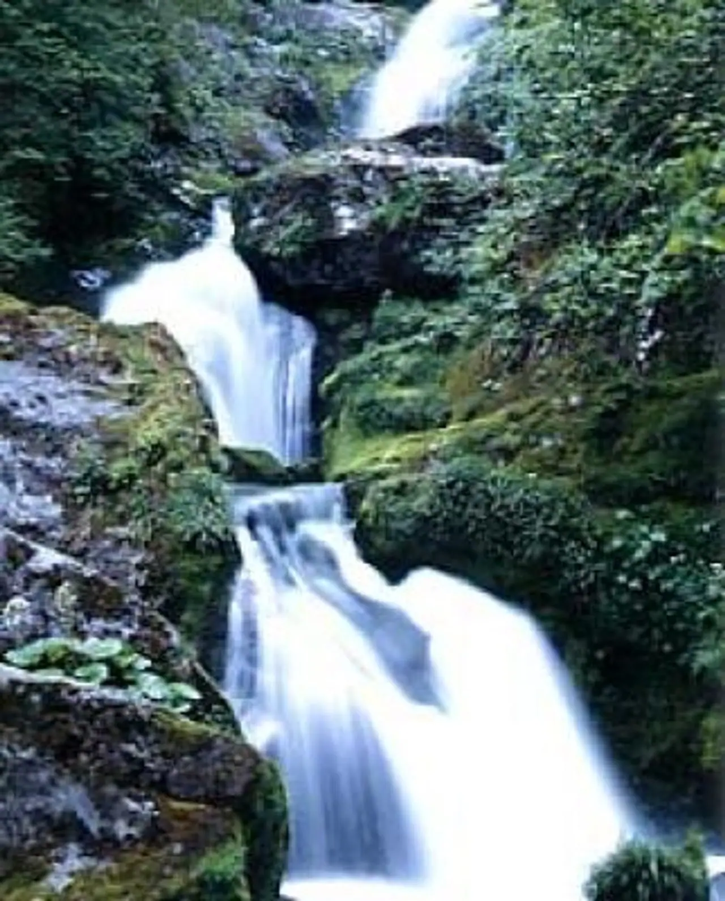
Stay
三陸海岸 浄土ヶ浜パークホテル
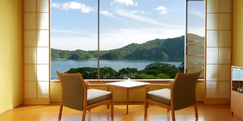
Sanrikukaigan Joudogahama Paakuhoteru
Hotel in Miyako, Iwate.
備長炭の湯 ホテル宮古ヒルズ（ＢＢＨホテルグループ）
Binchou Sumi No Yu Hoteru Miyako Hiruzu ( B B H Hoteruguruupu )
Hotel in Miyako, Iwate.
ゲストハウス３７１０
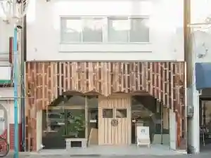
Gesutohausu 3 7 1 0
Guesthouse in Miyako, Iwate.
宮古ホテル沢田屋
Miyako Hoteru Sawada Ya
Hotel in Miyako, Iwate.
みかわ旅館
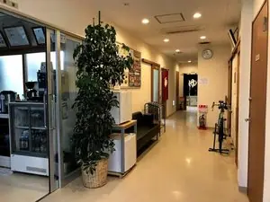
Mikawa Ryokan
Ryokan inn in Miyako, Iwate.
ホテルアートシティ
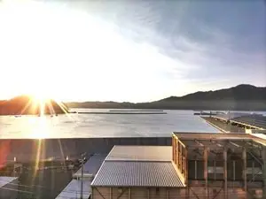
Hoteruaatoshitei
Hotel in Miyako, Iwate.
浄土ヶ浜パークホテル
Joudogahama Paakuhoteru
Hotel in Miyako, Iwate.
Dining
大寿司
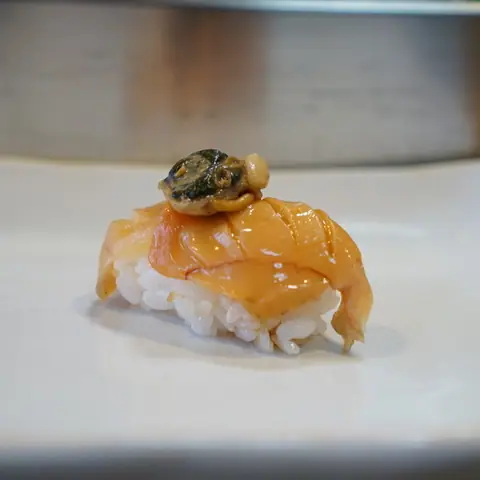
Dai Sushi
Sushi restaurant in Miyako, Iwate.
多良福
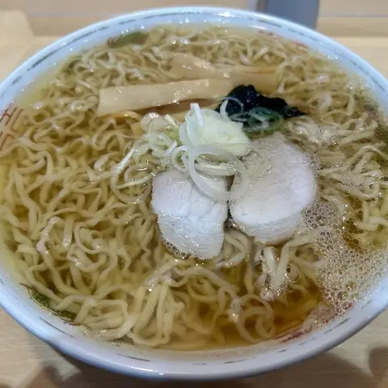
Tara Fuku
Ramen shop in Miyako, Iwate.
よし寿司
Yoshi Sushi
Sushi restaurant in Miyako, Iwate.
居酒屋 けんぼ
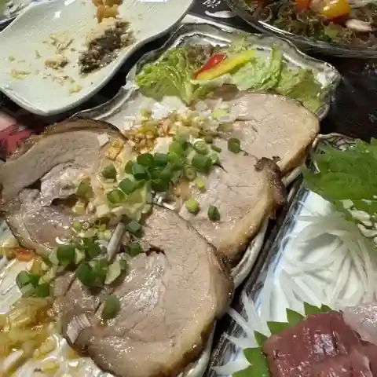
Izakaya Kenbo
Izakaya in Miyako, Iwate.
蛇の目 本店
Hebi No Me Honten
Sushi restaurant in Miyako, Iwate.
福
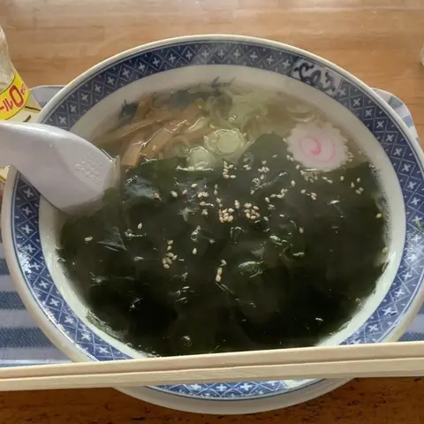
Fuku
Ramen shop in Miyako, Iwate.
魚正
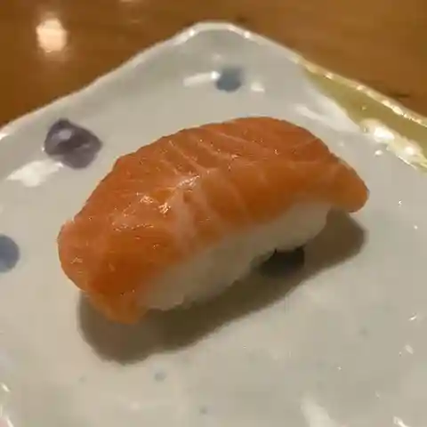
Sakana Sei
Sushi restaurant in Miyako, Iwate.
魚彩亭 すみよし
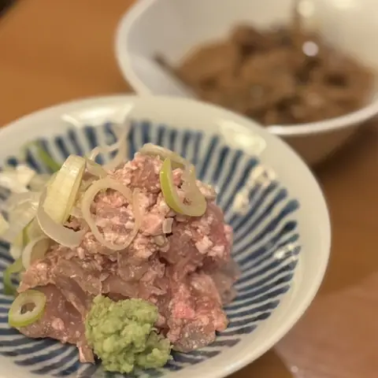
Sakana Sai Tei Sumiyoshi
Izakaya in Miyako, Iwate.
魚市場食堂
Uoichiba Shokudou
Shokudo diner in Miyako, Iwate.
丼の店 おいかわ 宮古市魚菜市場店
Donburi No Mise Oikawa Miyako Shi Gyosai Shijou Mise
Rice-bowl restaurant in Miyako, Iwate.
御食事処 うちさわ
Mike Koto Tokoro Uchisawa
Soba restaurant in Miyako, Iwate.
パティスリー レ・ド・シェーブル
Pateisurii Re Do Shieeburu
Cake shop in Miyako, Iwate.
冨士乃屋
Fuji No Ya
Chinese restaurant in Miyako, Iwate.
浄土ヶ浜レストハウス
Joudogahama Resutohausu
Seafood restaurant in Miyako, Iwate.
海鮮居酒屋山水
Kaisen Izakaya Sansui
Izakaya in Miyako, Iwate.
駅そば
Eki Soba
Soba restaurant in Miyako, Iwate.
無礼講
Bureikou
Izakaya in Miyako, Iwate.
ひろや食堂
Hiroya Shokudou
Shokudo diner in Miyako, Iwate.
もうもう亭
Moumou Tei
Shokudo diner in Miyako, Iwate.
レストラン汐菜
Resutoran Shio Na
Shokudo diner in Miyako, Iwate.
善助屋食堂
Zensuke Ya Shokudou
Shokudo diner in Miyako, Iwate.
ベーカリー相馬屋
Beekarii Souma Ya
Bakery in Miyako, Iwate.
たからや
Takaraya
Soba restaurant in Miyako, Iwate.
Sights
Omoe Fisheries Experience Center Enyaa Dotto
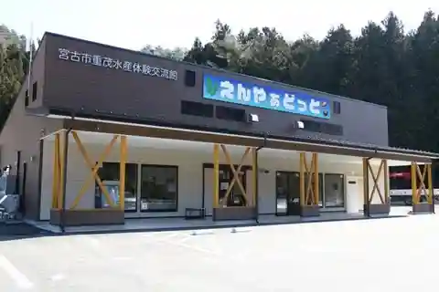
Miyako City Shigemo Fisheries Experience Exchange Center Enya Dot
Masaki Kaigan Kominato Beach
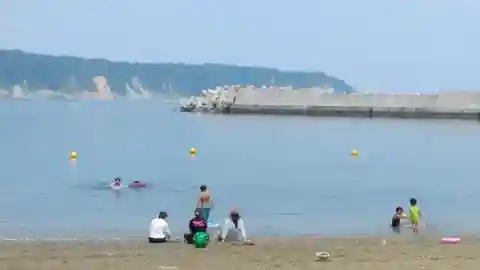
A cape that juts out to the north of Taro Bay, it offers a panoramic view from Myojinzaki to Todogasaki, the easternmost tip of Honshu, and is also suitable for rock fishing.
Aneyoshi Campsite
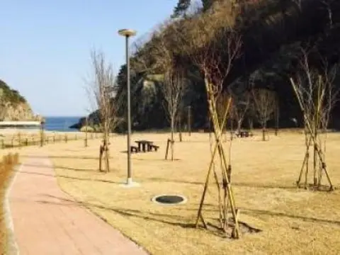
This campground is located at the starting point of the promenade to Todokasaki Lighthouse, located on the easternmost tip of Honshu.
Miyako Anegasaki Auto Campsite
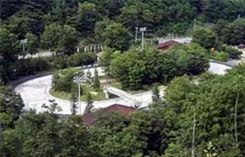
A campground that opened in 2013. Located on a hill 60m above sea level, you can enjoy the resort outdoors overlooking the beautiful Sanriku coastline.
Janome Main Store
A fish restaurant located right in front of Miyako Station. Nigiri and sashimi sushi using fresh seafood caught in the Sanriku region.
Yakushi River Gorge
Many yamame trout and char live in the mountain stream, which stretches for about 10km from its confluence with the Oguni River.
Kukai Kogen Walking Center
A facility that provides information about the nature of Kukai Kogen, including walking routes and flora and fauna, to visitors to Kukai Kogen.
Gakkura no Sato Pickles
This pickled radish is called "Gakkurazuke" because of the way it is cut off with a machete.
Kawai Perilla
The perilla juice "Kawai Perilla" is made by blending the extract of one-sided perilla (the top of the leaf is blue and the bottom is red), which is a specialty of the Kawai region of Miyako City, with pure honey harvested at the foot of Mt.
Hangan Inari Shrine
To commemorate the virtue of Yoshitsune, who left Mt. Kuromori and headed north after being holed up for three years and three months, a shrine was built on top of his buried armor.
Ika Senbei Suda (Squid Crackers)
The original Sugata's squid rice crackers were established in the Meiji era.
Grilled Matsumo Seaweed
Matsumo" was eaten as a healthy food in the Miyako region. We have commercialized and sold it as "Yakimatsumo (grilled Matsumo)" so that more people can know about it.
Apples
The apples grown in the Niisato area are full of sweet honey and are called "leafless apples".
Roadside Station Minato Oasis Miyako Seatopia Naado
Roadside Station “Minato Oasis Miyako” ~Seatopia Nado~